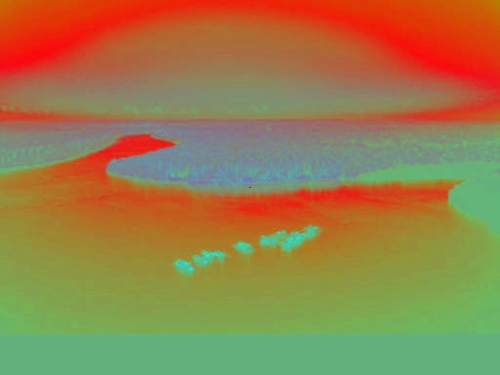
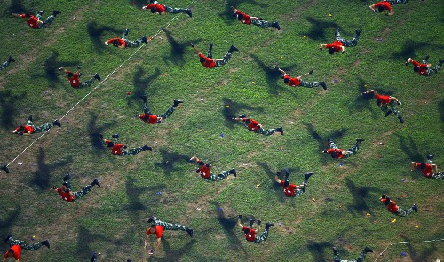

Aissen’s digest
26 août 2008
25 août 2008
What will the world be like in 100 year?

What will the world be like in 100 years? Funny estimate.
By Jennifer Daniel.
15 août 2008
République tchèque
En plus d’avoir de bons hackers, et d’assez belles villes, les tchèques ont semble-t-il de très beaux paysages, et les photographes pour les capturer.
12 août 2008
If they keep doing this…

Pas très frais, mais tellement vrai…
Si dépenser des sous-sous apporte une moins bonne expérience utilisateur que ne pas le faire, quel interêt?
7 août 2008
31 juillet 2008

{kind=link}
{kind=link}
14 juillet 2008
{kind=link}
13 juillet 2008
Du bon usage de la persistance rétinienne
Fixez le pixel au centre de l’image pendant 5 à 10 secondes, puis passez la souris sur l’image:

Si vous ne bougez pas les yeux, vous verrez l’image en couleur pendant quelques secondes. Sinon réessayez. C’est de la persistence rétinienne.
Fais avec, via inspiré par, image originale de Yann Arthus-Bertrand.
{kind=link}
{kind=link}
11 juillet 2008
Les hommes volants

{kind=link}
Entrainement de la police chinoise avant les JO.
Via The Big Picture, un excellent blog photo par le Boston Globe.